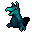

ウフェツバス Ufetubus
英語版 CrawlWiki の記事「Ufetubus」(0.33 向け、2025-05-06 版)の翻訳です。原文の著者は編集履歴をご覧ください。
この記事は 0.33 の時点の内容で、最新の 0.34 とは違うところがあるかもしれません。
| ウフェツバス 5  | |
|---|---|
| HP | 5-12 |
| HD | 1 |
| XP | 7 |
| 速度 | 15 |
| AC | 2 |
| EV | 15 |
| 意志力 | 10 |
| 攻撃1 | 6（打撃: 回り込み） |
| 攻撃2 | 6（打撃: 通常）
|
| 耐性 | rC+ rMiasma rN+++ rTorm |
| 弱点 | 火炎 神聖 |
| 生息地 | 陸上 |
| 知能 | 人間並み |
| 使用 | 扉を開ける |
| 分類 | 悪魔 |
| 体格 | 小さい |
| 種類 | ウフェツバス、ウフェツバス |
| フラグ | 邪悪 |

| 金切り声でペチャクチャ喋る下級デーモンだ。獲物の脇をこっそりすり抜けて、背後から刺すのが大好きだ。
(著作権のある引用のため本文は省略) |
基本情報
ウフェツバスは、すばしこいが非力な5級悪魔だ。しつこくあなたにつきまとい、背後に回り込んでちょっとしたダメージを与えてくる。迷宮の浅い階やアビスに出るほか、ほかのモンスターに召喚されて現れることもある。とくにヱノクシヌルは群れで呼び出してくる。
小技
数が多くても、ウフェツバスはほとんど脅威にならない。大勢呼び出されると、たいていほかの脅威より先に駆けつけてあなたを取り囲み、足止めしてくる。本当に危険な敵がいるうちは、行く手をふさがれていない限り、召喚されたウフェツバスを倒すのに時間を使わないこと。